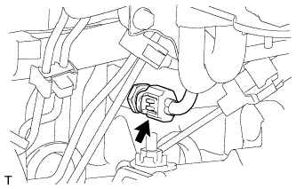

ДАТЧИК ТЕМПЕРАТУРЫ ОХЛАЖДАЮЩЕЙ ЖИДКОСТИ > СНЯТИЕ |
| 1. REMOVE UPPER RADIATOR SUPPORT SEAL |
Освободите 13 фиксаторов и снимите верхнее уплотнение кронштейна радиатора.
| 2. REMOVE FRONT BUMPER LOWER COVER |
Remove the clip, 5 bolts and front bumper cover lower.
| 3. REMOVE NO. 1 ENGINE UNDER COVER SUB-ASSEMBLY |
Remove the 4 bolts.
 |
Unhook the engine under cover from the vehicle body as shown in the illustration.
| 4. DRAIN ENGINE COOLANT |
Ослабьте пробку сливного крана радиатора.
| *1 | Пробка радиатора | *2 | Бачок радиатора |
| *3 | Пробка сливного крана радиатора | *4 | Пробка сливного крана блока цилиндров |
Слейте охлаждающую жидкость, сняв крышку радиатора.
Ослабьте пробку сливного крана блока цилиндров.
Ослабьте пробку сливного крана блока цилиндров и слейте охлаждающую жидкость из двигателя.
| 5. REMOVE ENGINE COOLANT TEMPERATURE SENSOR |
|  |
Disconnect the engine coolant temperature sensor connector.
Remove the engine coolant temperature sensor and gasket.